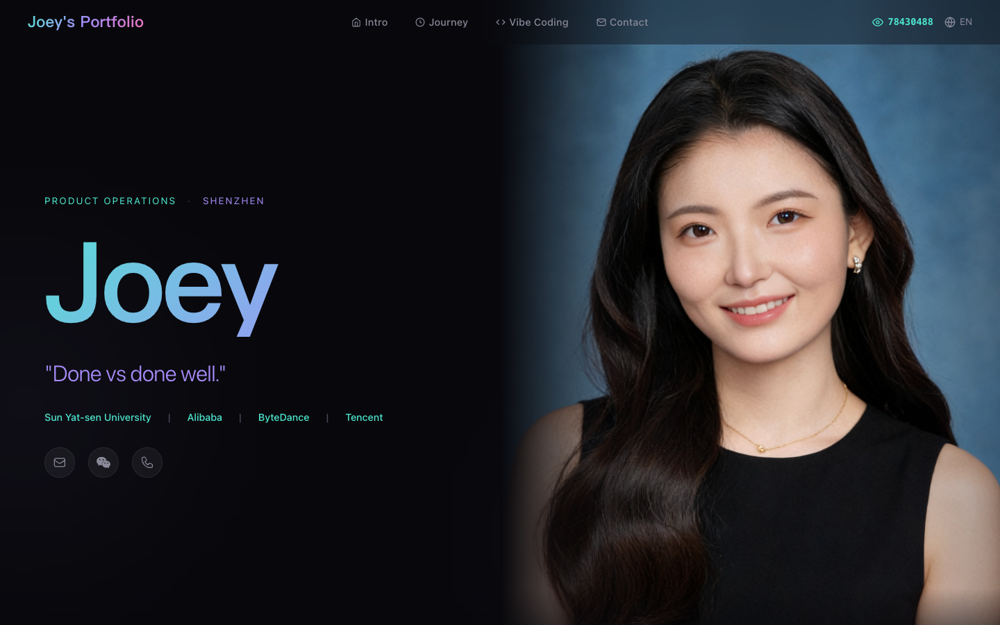
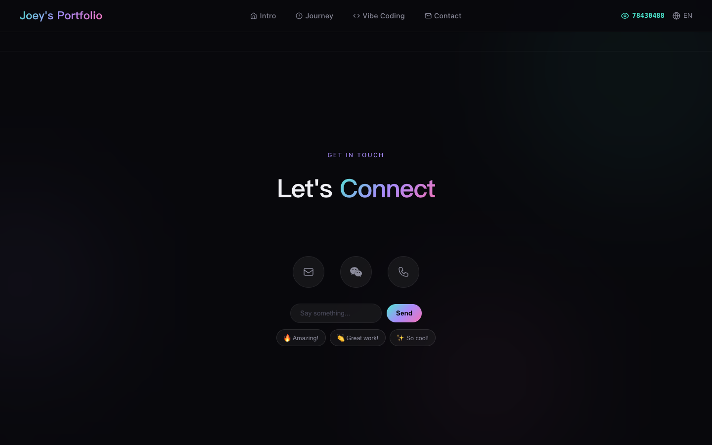
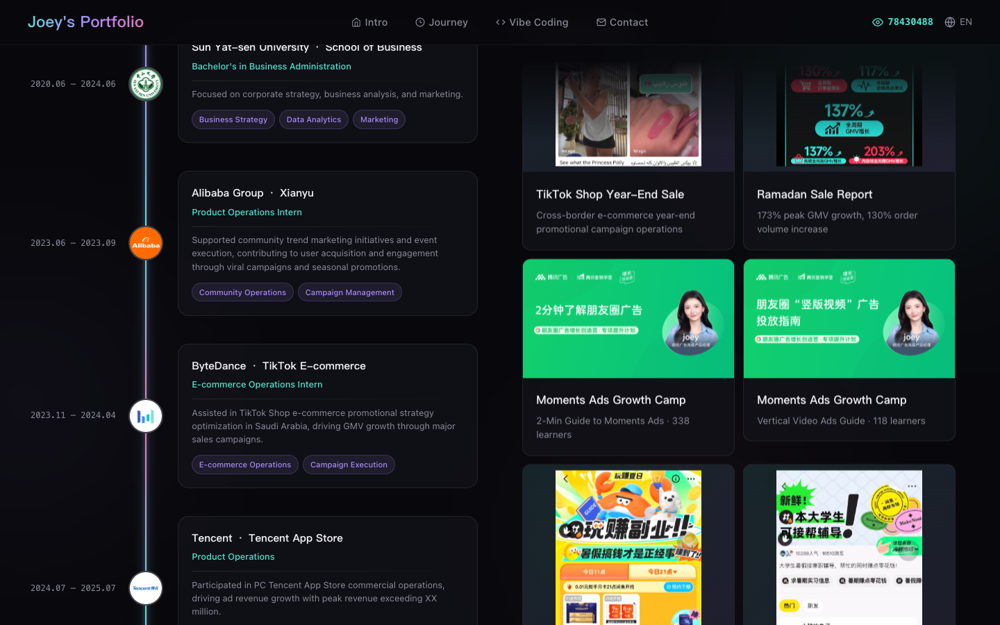
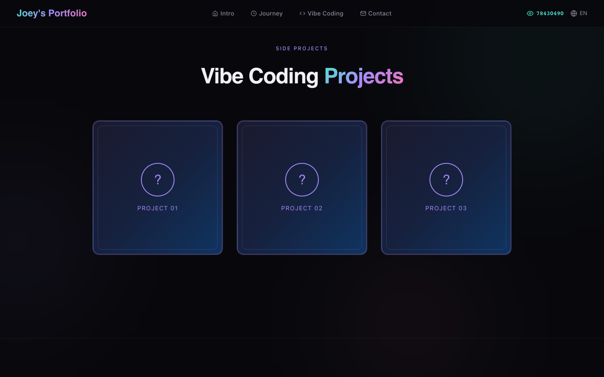
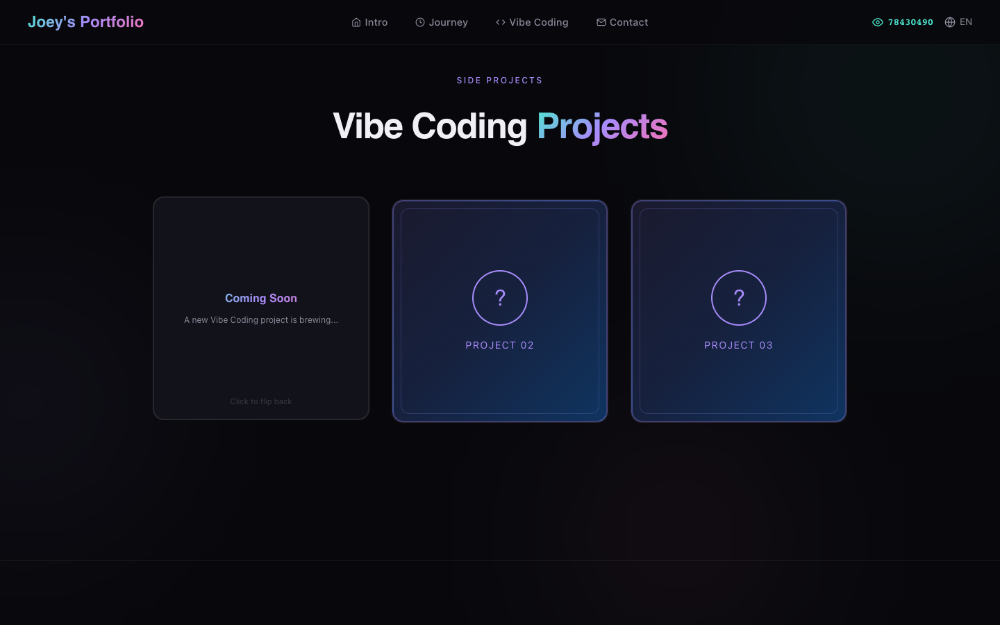
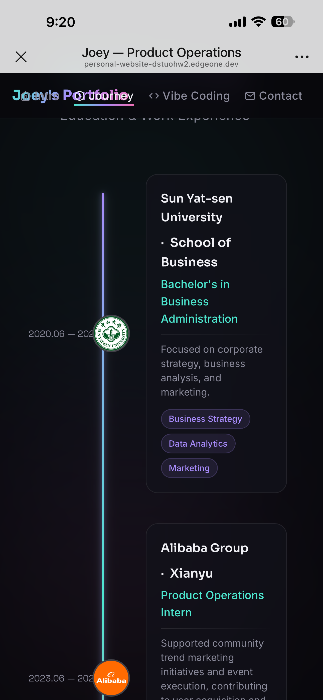
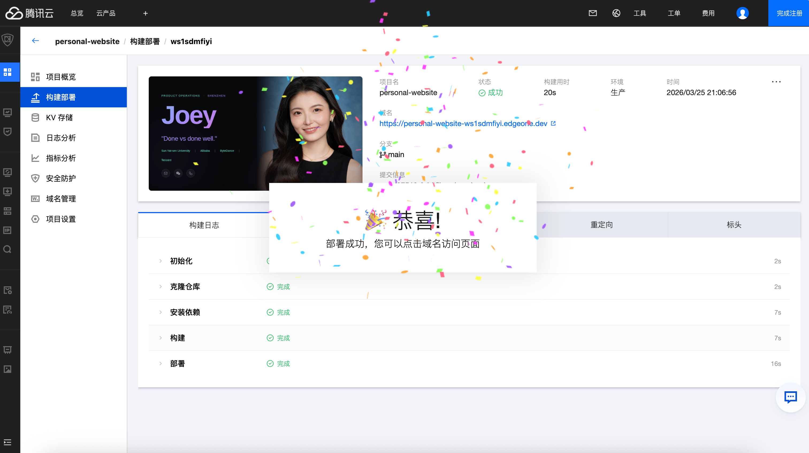
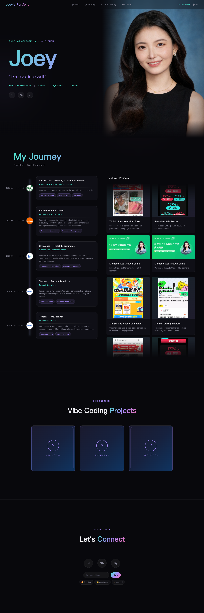

不会写代码的我，用 Vibe Coding 把简历做成了网站（附保姆级搭建教程）
起因
三月某天下班后的晚上，刷到一条小红书。一个博主标题写：「2h手搓个人网站｜所有人！把简历撕烂😁」。他用 Claude Code 两小时做了个个人网站替代 PDF 简历，视频末尾说了句让我印象很深的话——
"Vibe Coding 真正的隐性成本不是工具，而是品味（Taste）。"
做了几年产品运营，"品味"这个词我天天在用：什么页面让用户愿意停留，什么文案让人多看两秒。但我从没把它跟写代码联系在一起。
其实"简历即网站"在 AI 圈早就不新鲜了，类似的尝试很多，这条视频算是最后推我一把的契机。如果搭网站的门槛真的低到只需要聊天，传统 PDF 简历还能撑多久？
想不明白，不如动手试。这也是我第一次 Vibe Coding。
工具用的是 CodeBuddy。选它一方面是自家产品想亲身体验一下，另一方面也好奇：一个完全不会写代码的人，用它能做到什么程度？
第一晚：从"帮我做个网站"到"我想要什么"
下班回来打开 CodeBuddy，把简历内容丢给它："帮我做一个个人网站。"
几秒钟后页面就出来了。
能用，但很无聊。就是你见过一万次的简历模板——经历从上到下排，左边照片右边文字，一张被塞进浏览器的 A4 纸。
看着它我意识到：问题出在我身上。我只说了"做什么"，没说"为什么"。
我开始想一个问题：如果有人打开这个页面，我希望他前三秒感受到什么？
不是经历罗列，而是一个人的调性。先看到名字——Joey，然后一句 slogan 逐字打出来，像有人正在跟你说话。经历在后面等着，前三秒只属于第一印象。
这是一个产品定位决策，和写不写代码无关。
想清楚之后告诉 CodeBuddy，它生成了深色背景的页面，名字用渐变色大字体，下面打字机效果慢慢敲出 "Done vs done well."

想清楚要什么之后，效果完全不一样了
第二晚：惊喜和崩溃交替出现
第二天下班回来继续搞。这天是主战场。
惊喜
说"最后一页加个弹幕功能，访客可以留言"——它做了弹幕，还给了五种颜色（青紫粉金蓝），半透明胶囊形状带发光效果，顺手还加了快捷发送按钮。

弹幕留言区：五种颜色 + 快捷发送
说"时间轴太普通了"——改成了一条彩色渐变竖线，每段经历旁边放公司 logo，hover 时 logo 发光放大。

彩色渐变时间轴 + 公司 logo
网站里有个"Vibe Coding"版块，我想放自己未来做的 vibe coding 项目。不过现在还没啥别的项目，就先放了一张塔罗牌当彩蛋——点击翻转，背面写着"敬请期待"，翻牌的 3D 动画还挺丝滑的。


塔罗牌彩蛋：点击翻转，敬请期待
脑子里刚冒出一个念头，几秒后就变成了能交互的东西。这种体验以前没有过。
崩溃
然后所有功能突然全坏了。语言切换失效、弹幕消失、打字机停了。页面还在但所有交互像被拔了电源。
和 CodeBuddy 反复排查了好几轮，每次它都说"找到了问题"，修完还是坏。最后发现原因——
一个多余的 });。两个字符。
某次修改时函数结尾被多加了个闭合符号，JavaScript 直接认为整个脚本有语法错误，全部代码拒绝执行。
AI 写出来的 bug，最终也由 AI 找到。但中间那段反复排查的过程，驱动力完全来自人的直觉——我只知道"页面不对劲"，说不出哪行代码有问题；AI 能检查每一行代码，但它不知道"不对劲"是什么感觉。
移动端适配是另一个战场。手机上看导航栏文字挤成一团，时间轴的竖线和 logo 对不齐，弹幕从标题和按钮上面飘过去。


移动端适配：每个 bug 都要截图发给 AI 反复调
弹幕穿透的问题尤其折腾。我说"弹幕别飘过文字和按钮"，CodeBuddy 试了好几种方案——调层级、限高度、改区域——都不彻底。最后它搞了一个"安全行道系统"：自动检测所有内容元素的位置，算出哪里是空隙，弹幕只走空隙。
方案挺聪明的。但它存在的前提是我说了四五次"还是不行"。
这晚的体会是：Vibe Coding 不是"你说 AI 做"的单向关系，更像 pair programming。一个感觉敏锐但不懂技术的人，配一个技术过硬但需要反馈的搭档。
而且我发现，沟通效率最高的时候不是我给精确的技术指令，恰恰是说出最模糊的感受："太卡了"、"这里不够丝滑"、"感觉不对"。CodeBuddy 比我更擅长把模糊感受翻译成具体的代码修改。
第三晚：上线才是折腾的开始
功能基本完整后，我觉得快结束了。
天真。
部署到腾讯云 EdgeOne Pages 后，所有公司 logo 全裂了。原因很朴素——图片文件名是中文的。"中山大学.jpg"在本地正常，上了服务器 URL 编码出问题。全改成英文重新上传才修好。

EdgeOne Pages 部署成功的那一刻
然后是录屏。想录一段演示视频来分享。CodeBuddy 用 Playwright 帮我自动录——控制浏览器打开页面、自动滚动、点击交互。
- 第一版：一卡一卡的，像 PPT 翻页
- 第二版：太快了，什么都没看清
- 第三版：上了缓动函数，60 步渐进滚动
- 第四版："还是有点快"
- 第五版：终于可以了
最后配了 GitHub 自动推送——每次改完代码 CodeBuddy 直接帮我 commit + push，不用手动上传。这个体验很舒服，改完即上线。
编码可能只占整件事的 30%，剩下 70% 是调试、适配、部署、打磨细节。 和做产品一模一样——功能上线不是终点，用户体验才是。
聊聊工具本身
好用的地方： CodeBuddy 对自然语言的理解确实不错。我全程没写过一行代码，甚至不太清楚 HTML 和 CSS 的区别，但它能把"弹幕别穿过文字"这种模糊描述翻译成具体方案。修 bug 的时候虽然有时需要几轮才能找到根因，但整体效率比我预期高很多。自动提交 GitHub 的工作流也省了不少事。
希望更好的地方： 在调移动端样式的时候，我需要在手机上看到 bug → 截图 → 回到电脑描述问题给 CodeBuddy。如果能像 Figma 一样在预览页面上直接标注评论，它自动识别并修复，体验会好很多。另外多个任务同时跑的时候偶尔会有点卡，不过整体瑕不掩瑜。
想远一点
做完网站后，我一直在想一个问题。
简历本质上是一种"自我介绍的协议"。载体从手写信、打印纸到 Word、PDF，格式在变，但逻辑没变——按时间排经历，用文字描述你做了什么。
但个人网站和 PDF 的区别，不只是载体升级。PDF 告诉别人你做过什么，网站能让人感受到你是什么样的人——你的审美、你对细节的态度、你愿意在哪里花心思。
我选深色背景和渐变色，因为觉得这是"安静的专业感"。加弹幕是因为个人网站不该是独角戏，来访者应该能留下痕迹。选 "Done vs done well." 当 slogan，因为这六个词比简历上任何一段项目描述都更像我。
这些选择 AI 替不了我做。
当代码的生产成本趋近于零，"做什么"远比"怎么做"重要。 代码不再是瓶颈，想法才是。审美才是。判断力才是。
这和 iPhone 普及摄影的逻辑一样——人人都能拍 4K，但好电影和坏短视频的差距反而更大了。真正稀缺的不是拍摄能力，而是知道什么值得拍。
Vibe Coding 不会消灭程序员，就像 iPhone 没消灭导演。但它在重新定义：人人都能"做出来"的时代，什么才是真正的竞争力？
我觉得是品味。是判断。是那种说不清楚但确实存在的"对了"的感觉。
最后
几个下班后的晚上，断断续续聊了不少轮对话。
目前的网站功能还比较简单，算是一个起点——深色背景，渐变色名字，打字机 slogan，带公司 logo 的时间轴，一张写着"敬请期待"的塔罗牌，能发弹幕的留言区，中英文切换。还有不少想迭代的地方，慢慢来。
🔗 https://joeyzhou.space
网站当前效果
它不完美，但它存在了。而且随时可以迭代。
如果你也想试试：打开 CodeBuddy，把简历内容丢给它，然后说"帮我做个网站"。剩下的，你们聊着聊着就有了。
但先想清楚一件事——你想让别人看到怎样的你。
这件事 AI 帮不了。
感兴趣的同事可以随时找我聊，乐意分享踩过的坑 🤝
附录：Vibe Coding 搭建个人网站完整工作流
如果你也想试试，以下是我实践后整理的完整流程，从 0 到上线，域名只花了 8 块钱。
一、需求与素材准备
1. 明确核心需求
在打开任何工具之前，先想清楚：访客第一眼应该看到什么？你的个人调性是什么（专业/活泼/极简）？除了经历展示，还想加什么互动元素？这一步决定了后续所有决策，AI 能做任何事，但前提是你知道要什么。
2. 准备素材清单
- 个人简介文案（建议中英文各一份）
- 工作/教育经历（公司、职位、时间、描述）
- 公司 logo 图片（重要：用英文文件名如 alibaba.jpg，中文文件名部署后可能乱码）
- 个人照片
- 联系方式（邮箱、微信二维码等）
3. 工具选择
CodeBuddy（推荐，IDE 内直接操作，改完即可预览）。也可用 Cursor、Claude Code、Windsurf 等。核心是选一个支持对话式编程、能直接操作文件的 AI 工具。
二、开发阶段
Step 1：初始化项目
把简历内容发给 AI，描述你想要的风格和整体调性。Prompt 写得越具体，第一版出来的效果越接近预期，后续迭代轮数越少。示例：
Step 2：迭代优化
第一版大概率不会完全满意，这时候你的反馈质量直接决定迭代效率。和产品需求评审一个道理——描述越具体，返工越少：
- ❌ "改好看点" → AI 会随机改，大概率不是你要的方向
- ✅ "时间轴想用彩色渐变竖线，每段经历旁放公司 logo，hover 时 logo 发光放大" → 一轮就到位
- ✅ "首页名字和 slogan 之间间距太大，缩小到当前的 60%" → 精确到数值
- ✅ "弹幕颜色太亮了，降低饱和度，做成半透明磨砂质感" → 带审美方向
一个经验：如果你说了三次同一个问题 AI 还没改对，大概率是描述方式需要换——试着用对比（"像 xxx 那样"）或否定（"不要 xxx 的感觉"）来引导。
Step 3：多端验证
桌面端调好之后，用手机浏览器打开预览链接做一轮检查。移动端适配是最容易出问题的环节，我自己踩过的坑包括：导航栏文字挤在一起重叠、时间轴 logo 和竖线偏移、弹幕飘过其他 UI 元素、字体在小屏上过大或过小。发现问题后截图标注发给 AI，说清楚"在哪一页、当前什么样、期望什么样"即可。
三、部署上线
方案：腾讯云 EdgeOne Pages（推荐）
免费、国内访问快、支持自定义域名和自动 HTTPS。
部署流程：
- 创建 GitHub 仓库，将代码推送到 main 分支
- 登录 EdgeOne Pages 控制台
- 点击「新建项目」→ 关联 GitHub 仓库
- 选择框架预设（纯 HTML 选「静态网站」）
- 点击部署，等待 1-2 分钟完成
自定义域名配置（可选，成本约 8 元/年）：
- 在阿里云/腾讯云购买域名（推荐 .space/.me/.com，首年 1-10 元）
- EdgeOne Pages → 自定义域名 → 添加域名 → 复制 CNAME 值
- 阿里云 DNS 解析 → 添加 CNAME 记录：主机记录填 @，记录值填 EdgeOne 给的地址
- 等待 DNS 生效（通常 5-30 分钟）
- EdgeOne 自动申请免费 HTTPS 证书
成本参考：
| 项目 | 费用 |
|---|---|
| EdgeOne Pages | 免费（每月 100GB 流量） |
| 域名（joeyzhou.space） | 首年 8 元 |
| HTTPS 证书 | 免费（EdgeOne 自动管理） |
| GitHub 仓库 | 免费 |
| 总成本 | 8 元/年 |
四、持续迭代
网站上线不是终点。配置好 GitHub 自动推送后，每次想改东西只需要：
- 打开 CodeBuddy 说"帮我改一下 xxx"
- AI 修改代码并自动 commit + push
- EdgeOne 自动检测更新并重新部署
从改需求到线上生效，全程不到 5 分钟。保持迭代比一次做到完美重要得多。
网站：joeyzhou.space
GitHub：github.com/Joeyyyzhou/web
工具：CodeBuddy
部署：腾讯云 EdgeOne Pages
技术栈：纯 HTML / CSS / JS，单文件，无框架
灵感：小红书 @Avery胡「2h手搓个人网站｜所有人！把简历撕烂😁」